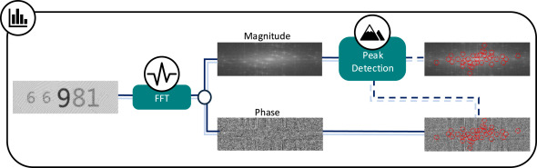

Passing My PhD Viva and What Comes Next
A personal reflection on passing my viva, the core technical contributions of the thesis, and the kind of Research Scientist work I want to do next.
Computer Vision Researcher | Open to Research Scientist roles

Machine Learning Engineer and Computer Vision Researcher with 5+ years of experience developing and deploying advanced neural networks for image and video understanding, synthetic data generation, and robustness-critical visual systems. I recently passed my PhD viva on March 13, 2026, and I am currently completing minor corrections while exploring Research Scientist opportunities.
My work combines PyTorch-based R&D, generative and augmentation-driven pipelines, and large-scale training and evaluation of deep neural networks. I have published research at CVPR and ECCV, won a Best Paper Award at the ECCV VISION Workshop, and worked across explainability, domain adaptation, synthetic-to-real generalisation, and graphics-aware data generation for real-world deployment.
Newcastle University, Autumn 2021 - March 2026
Thesis: Robust and Explainable Deep Learning for Fine-Grained Visual Inspection in Anti-Counterfeiting Applications
Viva passed on March 13, 2026. Minor corrections in progress.
Industrial collaboration with P&G; research integrated into production systems.
Newcastle University, Autumn 2018 - Summer 2021
Dissertation: Fine-Grained Image Classification Using Siamese Neural Networks and Detection of Unseen Classes
German Aerospace Center (DLR), Sankt Augustin, April 2025 - July 2025
Built an end-to-end drone detection pipeline using YOLOv5 / PyTorch, improving synthetic-to-real robustness.
Generated large-scale synthetic datasets in Unreal Engine 5 & AirSim across varied weather domains and viewpoints.
Created automation tools for dataset generation, reducing manual workload and improving reproducibility.
Contributed to domain shift and synthetic data research; pipelines adopted for ongoing internal use.
Newcastle University, 2021-2026
Created a system for classifying genuine and counterfeit consumer goods products using real and synthetic imagery.
Studied model robustness under real-world issues including distribution shift, image quality degradation, blur, noise, and compression artefacts.
Combined Fourier frequency methods with deep learning to improve fine-grained visual classification performance.
Published at CVPR, ECCV, VISAPP, and Array; received Best Paper Award at the ECCV VISION Workshop.
Research informed production pipelines for retraining and quality control.
School of Computing, Newcastle University, 2021-Present
Supported MSc Deep Learning students with debugging, experiment design, and evaluation.
Improved student proficiency in Neural Networks and Computer Vision experimentation.
Received for An Augmentation-based Model Re-adaptation Framework for Robust Image Segmentation (VISION'24, Milan, Italy).
Certificate from the 2nd Workshop on Vision-based Industrial Inspection (in conjunction with ECCV 2024).
Authors: Joseph Smith, Zheming Zuo, Jonathan Stonehouse, Boguslaw Obara
Journal: Array
Year: 2025
Volume/Article: 29, 100643
DOI: 10.1016/j.array.2025.100643

Authors: Zheming Zuo, Joseph Smith, Jonathan Stonehouse, Boguslaw Obara
Conference: European Conference on Computer Vision Workshops (ECCV), 2024
Award: Best Paper Award

Authors: Zheming Zuo, Joseph Smith, Jonathan Stonehouse, Boguslaw Obara
Conference: IEEE/CVF Conference on Computer Vision and Pattern Recognition Workshops, 2024
Pages: 183--193

Authors: Joseph Smith, Zheming Zuo, Jonathan Stonehouse, Boguslaw Obara
Conference: International Joint Conference on Computer Vision, Imaging and Computer Graphics Theory and Applications, 2024
Pages: 448--457

Talk: An Augmentation-based Model Re-adaptation Framework for Robust Image Segmentation
Workshop: Vision-based Industrial Inspection (VISION) at ECCV 2024
Location: Allianz MiCo, Milan, Italy
Date: September 29, 2024
Workshop: The Fifth Workshop on Fair, Data-Efficient and Trusted Computer Vision (FEDCV)
Conference: CVPR 2024 Workshops
Location: Seattle Convention Center, Seattle, WA, USA (Room Arch 303)
Date: June 17, 2024
Conference: 19th International Conference on Computer Vision Theory and Applications (VISAPP 2024)
Location: Precise House Mantegna Roma, Rome, Italy
Date: February 27-29, 2024
Long-form technical notes and reflections from my PhD work, focused on robust deep learning, practical computer vision deployment, and what comes next after the viva.
A personal reflection on passing my viva, the core technical contributions of the thesis, and the kind of Research Scientist work I want to do next.
A detailed breakdown of no-reference image quality assessment, quality cut-off selection, and how targeted filtering improved FGVC reliability in mobile-image settings.
A practical guide to model update strategy selection, catastrophic forgetting risk control, and augmentation-driven segmentation re-adaptation under temporal drift.